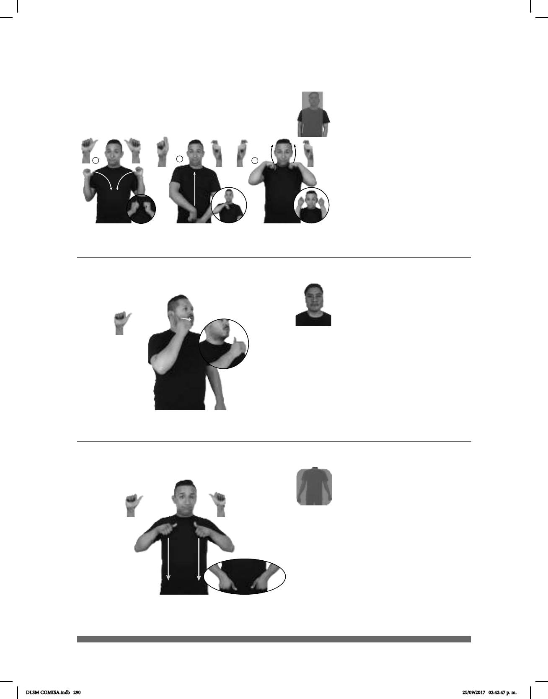

290
1
2
3
Seña: SC: I. SS; II. SB; III. SS.
I. A.4; II. Q.10, Q.9 y III. Q.9
I. Palmas hacia afuera; II. MD
palma hacia la derecha. MB palma hacia adentro;
III. Las palmas inician hacia abajo y terminan
hacia arriba.
I. A la altura de los hombros; II. MD
de la cintura al pecho. III. Del cuello a las sienes.
I. Las manos cruzan hacia el centro
y llegan a un punto cercano; II. MD recto; III. Las
manos se mueven fromando un arco hacia arriba.
Simula la acción de ponerse una
sudadera.
sust. f. Prenda de vestir de
algodón muy grueso que cubre el torso; se utiliza
especialmente para hacer deporte y sudar.
(A-172)
PONTE-SUDADERA pro-NOSOTROS IR CORRER
Vamos a correr ponte la sudadera.
Seña: SM
A.1
MD palma hacia la
izquierda.
Sobre la mejilla.
Recto hacia el frente.
País del este de África cuya
capital es Jartum.
(A-173)
SUDÁN FRONTERA EGIPTO
Sudán tiene frontera con Egipto.
Seña: SS
A.1
Las palmas inician hacia
abajo y terminan hacia adentro.
Del pecho a la cintura.
Recto.
sust. m. Prenda de
vestir tejida usada para protegerse del
frío que cubre los brazos y el tronco;
sintéticas, abierto o cerrado, y de cuello
alto o escotado.
(A-174)
AYER SUÉTER pro-YO COMPRAR
Ayer compré un suéter.
DLSM COMISA.indb 290 25/09/2017 02:42:47 p. m.